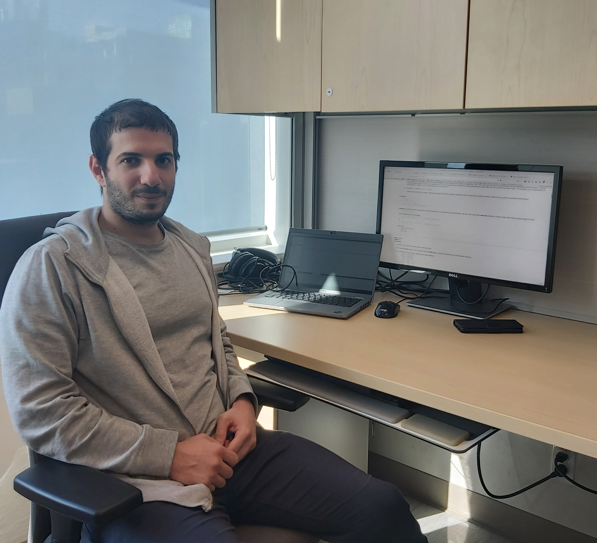

Dr. Daniel Miravet
Advanced Research Complex ARC, Rm. 409
25 Templeton Street,
Ottawa, ON, Canada.
K1N6N5
Tel. (613) 5625800 ext. 4884
email: dmiravet@uottawa.ca
Google Scholar
Areas of interest:
- Quantum-inspired algorithms, Tensor Networks and Quantum Computing.
- Electronic and optical properties of 2D materials, Density functional theory, Quantum Hall effect.
- Computational Physics.
- Strongly correlated materials.
Education:
- 2019 (Ph.D): Instituto Balseiro, San Carlos de Bariloche, Argentina.
Thesis title: “Effect of electron-electron interactions and magnetic fields in two-dimensional electron gases”
Supervisor: Dr César Proetto.
- 2013 (B.Sc): Faculty of physics , University of Havana, La Habana, Cuba.
Thesis title: “Excitonic state in spherical quantum dot semiconductor. Correction by dielectric polarization”
Supervisor: M.Sc. Yuriel Núñez Fernández.
Home
Last modified: